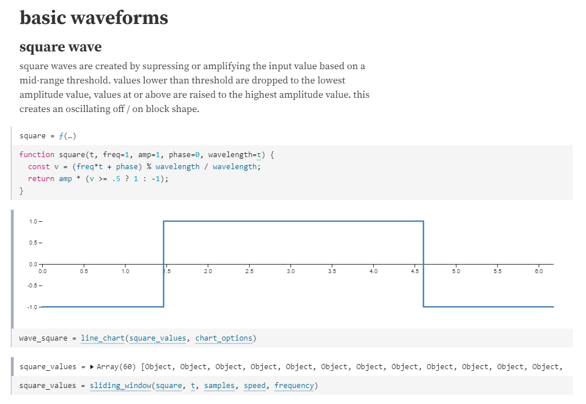
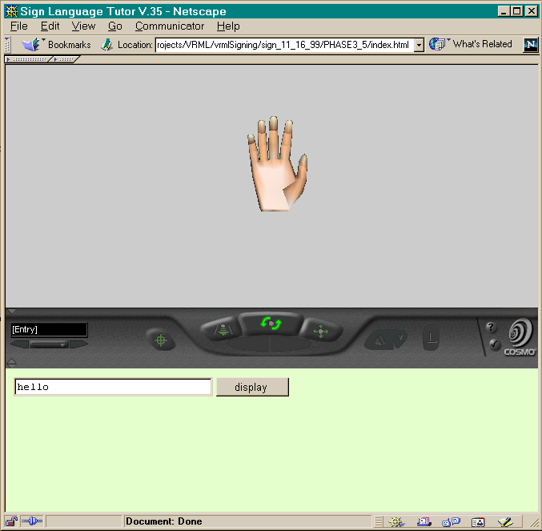

2020.08
open source | periodicity
constructed a visual, animated, interactive exploration of signal waveforms, using the Observable platform for thinking and showing.
2020.02
open source | programming pages
simplified the process to deliver readable, searchable, hierarchical documentation. designed and released a Jekyll theme leveraging composable layouts and markdown for simple authoring, GitHub Pages for simple publishing.

2019.10
CAS | Formulus
supported successful launch of new product for CAS. helped develop cross-functional approach to staffing, ensuring team effectively owned end-to-end delivery, including development, testing, deploying, and operations. solicited feedback and feature discovery with team and solution architects to enhance shared services and operational standards that improved flexibility, reliability, and security of the product.

2019.01
CAS | patent examination efficiency
ensured necessary cloud environment accounts, capacity and on-call support were available to enable the patent classification process. prioritized development of new platform services for automated account creation and setup to ensure project success.
2017.11
CAS | SciFinder-n
supported successful launch of new flagship product for CAS. managed operations teams and developed shared services group to ensure capacity, environments, tools, and operational processes were in place and effective at scale.
2017
open source | spec-ls
developed and released an opensource testing framework for LoomScript. patterned after RSpec and Jasmine.

2016.02
CAS | Methods Now
supported successful launch of new cloud-based product for CAS. managed teams transitioning from bare-metal deployments to private cloud infrastructure.

2016
open source | pixel fonts
developed and released opensource pixel fonts.
- botic, digital magnetic ink for cashing checks against the future
- console, a tiny pixel font that is small but clear, with 5 pixel uppercase and 4 pixel lowercase letters
- menu, a pixel font ready to report high scores, warn of grues, or tell the player to check in another castle

2016 ← 2014
open source | code libraries for the loomscript ecosystem
developed and released opensource code libraries for use with LoomSDK.
- json-ls, JSON helpers for Loom, including a pretty-printer
- log-ls, a logging utility for Loom, plus a handy config reader
- loomtasks, Rake tasks for working with loomlibs
- lsdoc, an API docs generator for LoomScript
- optionparser-ls, an option parser for Loom commandline apps
- task-ls, a task processing library for loomscript
2015 ← 2013
Chase | mobile banking app for iPhone
increased delivery frequency and quality, by improving efficiency and reliability of build and test systems with continuous integration and custom build status dashboards.
- #1 rated mobile banking app in 2015
- 22.8M users in 2015 [2015 annual report]
- 19.1M users in 2014 [2014 annual report]
- 15.6M users in 2013 [2013 annual report]

2014
The Engine Company | Loom Game Engine
contributed to development of commandline tooling and runtime libraries. improved documentation of APIs and examples.

2012
NEH | Meet the Earthworks Builders
consulted on a grant-funded project to visualize the relationship of the Newark earthworks to cycles of the moon. developed a 3D virtual environment to allow users to explore the space and positions of the moon from a first-person perspective.

2011
ACCAD, WOSU, OCEE | The Bakery Shop
led implementation of a grant-funded game to immerse second graders in concepts of economics in a visually engaging way. recruited the team of student artists and developers, co-developed concept and provided technical leadership for implementation. met with second graders for feedback sessions and improvements. demoed iterations to stakeholders, and presented final deliverable.

2009.06
Resource Interactive | Steelcase: Come Together
showcased Steelcase furniture design with an interactive microsite used at NeoCon 2009. architected and led development, working closely with the graphic and motion designers.
- CSCA Interactive Award of Merit 2009
2009
Resource Interactive | Sherwin-Williams: Color of Inspiration
developed a color exploration and inspiration tool for users to discover, create, and share palettes of Sherwin-Williams color. architected and led development of the interactive microsite.
- IAC outstanding interactive application 2009

2008
Resource Interactive | Sherwin-Williams: Color Visualizer Tool
developed an online tool to allow users to virtually paint surfaces with Sherwin-Williams color. led development of the online tool, including the imaging processes for selecting and painting on user-provided photos.
- Adobe MAX award finalist 2008
- Communication Arts webpick 2009
- IAC outstanding interactive application 2009
2006
ACCAD | video game production course and 4-player arcade cabinet
developed a new graduate level course to teach video game design and development. pitched the idea for the course, designed and implemented the course materials and arcade cabinet. taught from 2006–2010.
2005
open source | raycaster demo in javascript
provided an interesting example of using the new JavaScript <canvas> element to do software 3D rendering using raycasting. submitted demo to the Mozilla Developer Network documentation site.

2000
ACCAD | finger spelling tutor
developed an interactive 3D application to teach fingerspelling. programmed the 3D model manipulation in VRML and JavaScript.
